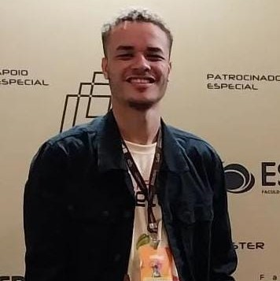
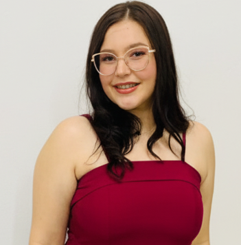
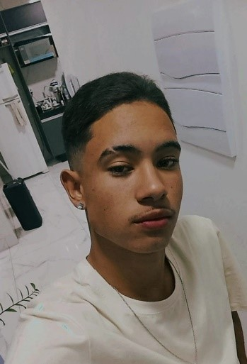

A Mente por Trás do Café
Conheça os especialistas apaixonados que impulsionam a inovação na Ocean Coffee.
Nossa Equipe de Desenvolvimento
Estudantes de Análise e Desenvolvimento de Sistemas da Fatec Garça.

Diego Colares
Gerente do Projeto
Como ponte entre a estratégia e o desenvolvimento, Diego guia os projetos do início ao fim, alinhando equipes para inovar no mercado de café.

Eduarda Moraes
Tech Lead & Product Owner
Lidera o desenvolvimento técnico e garante que o produto atenda às necessidades dos clientes, transformando requisitos de negócio em uma plataforma robusta.
Stefani Santos
Desenvolvedora Back-End & DBA
Constrói a lógica do servidor e administra o banco de dados, garantindo uma experiência de usuário rápida, confiável e segura.
Gabrielle Rodrigues
Marketing e Comunicação
Guardiã da nossa história e a voz da nossa marca, ela transforma nossa essência em narrativas que conectam e engajam nossa comunidade.
Participou do projeto até o dia 30/11/2025.

André Lyan
UX/UI Designer & Quality Owner
Como nosso principal defensor do usuário, André projeta a jornada visual da plataforma e garante que cada funcionalidade seja entregue com máxima excelência.

João Vinicius
Assistente de Projeto e Revisor
Com dedicação aos detalhes, João dá suporte à gestão de projetos e revisa cada etapa, garantindo um resultado final coeso e profissional.
Fatec Garça
Faculdade de técnologia de Garça
A Ocean Coffee é um orgulhoso fruto do curso de Análise e Desenvolvimento de Sistemas da Fatec Garça. Agradecemos à nossa instituição por todo o apoio, estrutura e incentivo fornecidos durante o desenvolvimento do nosso Projeto Integrador de Gestão de Projetos Ágeis.

Professor Fábio Rodrigues
Professor Orientador
Um agradecimento muito especial ao professor Fábio Rodrigues por toda a orientação, paciência e partilha de conhecimento. A sua mentoria foi fundamental para o sucesso e desenvolvimento da Ocean Coffee.